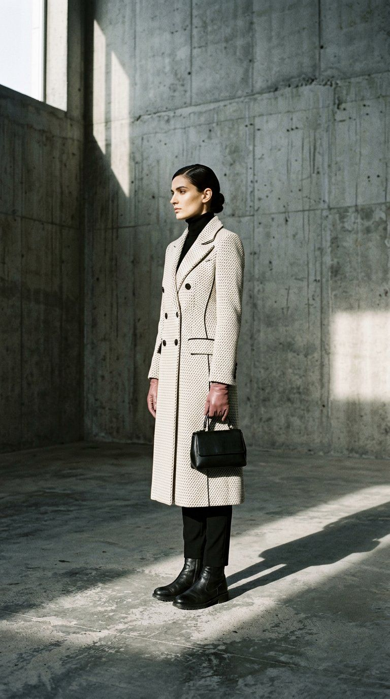
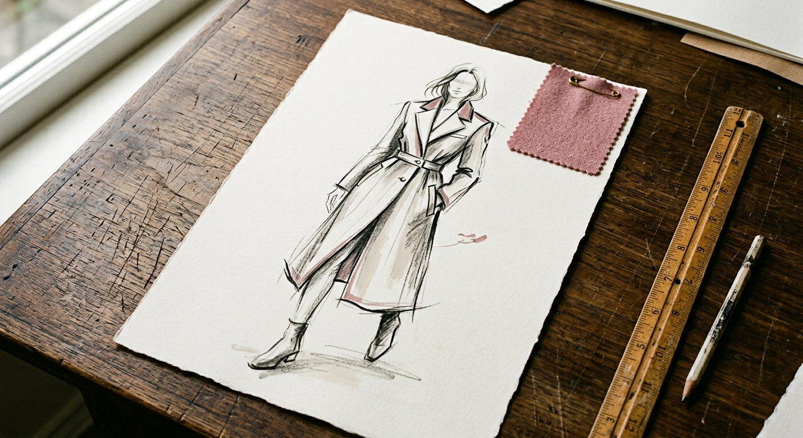

Brief & scope
We align on product, target price, size range and timeline. You get a written scope and a fixed turnaround before anything starts.
Design & develop
Sketches and concepts, fabric and trim direction, then line plans and range boards — reviewed together on a weekly call.
Technical documentation
CAD flats, measurement specs, tech packs and print engineering — the files your factory or team will actually run with.
Handoff & support
Layered source files plus print-ready and web-ready exports — with a recorded walkthrough and follow-up questions answered.
You receive
Layered, editable source files, production specs, and print-ready plus web-ready exports — no locked files, nothing you can't pick up and run with.
Every file leaves here factory-ready.
Typical turnarounds, from confirmed scope
Before / after
From idea to production


First sketch Final sampleVitrine — coat 04
Drag to compare